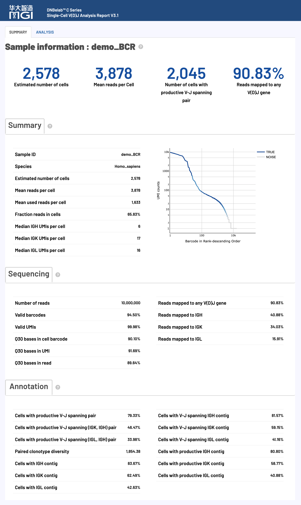
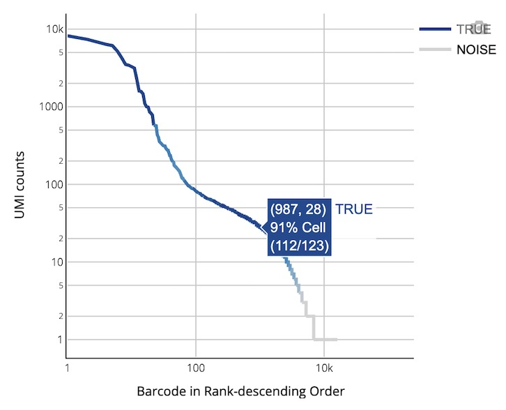

scVDJ Analysis Output¶
Complete Guide to Single-Cell V(D)J Sequencing Analysis Output Files
Overview ¶
After single-cell V(D)J analysis is complete, a standardized set of files and subdirectories is generated in the specified output directory for immune receptor repertoire analysis.
Tip: V(D)J analysis requires 5' end RNA sequencing data, and all output files adhere to the AIRR standard and are compatible with mainstream immunoinformatics tools.
Prerequisite: 5' end single-cell RNA sequencing analysis must be completed first.
Output Directory Structure ¶
.
├── airr_annotations.tsv # Annotation file in AIRR standard format
├── all_contig_annotations.csv # Annotation information for all assembled sequences
├── all_contig.fasta # FASTA file of all assembled sequences
├── all_contig.fasta.fai # Index file for all assembled sequences
├── clonotypes.csv # Clonotype analysis results
├── consensus_annotations.csv # Annotation information for consensus sequences
├── consensus.fasta # FASTA file of consensus sequences
├── consensus.fasta.fai # Index file for consensus sequences
├── filtered_contig_annotations.csv # Annotation information for filtered assembled sequences
├── filtered_contig.fasta # FASTA file of filtered assembled sequences
├── filtered_contig.fasta.fai # Index file for filtered assembled sequences
├── metrics_summary.xls # Summary of analysis quality metrics
└── *_scVDJ_TR(IG)_report.html # Analysis report in HTML format
Detailed File Description ¶
V(D)J Assembly and Annotation Files ¶
Core Content: Results of V(D)J contig sequence assembly, precise annotation, and quality assessment, covering the complete information of TCR and BCR rearranged sequences.
V(D)J Transcript Structure and Composition¶
Diagram of a Typical V(D)J Transcript Structure:
Explanation of Important Terms:
Technical Advantage: The V(D)J analysis pipeline can accurately identify and provide the amino acid and nucleotide sequences of the framework (FWR) and complementarity determining (CDR) regions.
Explanation of Important Annotation Standards¶
Full-Length Sequence Determination Criteria (Full Length)¶
A contig sequence is identified as a full-length sequence if it meets the following strict conditions simultaneously:
- The contig sequence perfectly matches the 5' start region of an annotated V gene.
- The contig sequence extends completely to the 3' end region of a J gene.
Productive Sequence Determination Criteria (Productive)¶
A contig sequence is identified as a productive sequence (i.e., functionally active) if it meets all of the following conditions simultaneously:
- Meets all the requirements for a full-length sequence as described above.
- Contains a valid start codon (ATG) at the correct position.
- No premature stop codons are present within the V-J spanning region.
- The start codon of the V gene and the stop codon of the J gene are in the same reading frame.
- A complete CDR3 variable region is successfully identified.
- The length of the V-J spanning region is within the biologically plausible range for the respective gene.
High-Confidence Sequence Determination (High Confidence)¶
Expected Receptor Configurations for Different Cell Types:
Principles for Marking Low-Confidence Sequences:
Common Causes for Anomalous Receptor Signals:
** Basis for Determining Low-Confidence Sequences:**
- Abnormal receptor configuration patterns that are biologically highly improbable.
- Suspicious sequences with significantly low UMI support.
- A number of extra productive chains that clearly exceeds expectations.
airr_annotations.tsv¶
Contains annotated and consensus sequences of V(D)J rearrangements in the AIRR standard format.
-
Purpose:
- Standardized Data Exchange: Serves as an exchange format compliant with AIRR community standards, facilitating integration with other immune repertoire analysis tools.
- In-depth Annotation: Provides detailed V, D, J gene call information, CIGAR strings, sequence alignment results, and the nucleotide and amino acid sequences of the CDR3 region.
-
Content and Format:
- The file is in the AIRR standard TSV format.
-
The fields included in the file are shown in the table below:
all_contig_annotations.csv¶
Contains detailed annotation information for all contig sequences (from both cellular and background barcodes).
-
Purpose:
- Comprehensive Data Review: Provides all assembled contig data, including low-quality or background signals, for in-depth quality control analysis.
- Complete Annotation: Offers full annotation of V(D)J gene segments and CDR/FWR regions.
-
Content and Format:
- The file is in CSV text format.
-
The fields included in the file are shown in the table below:
all_contig.fasta¶
Contains the nucleotide sequences of all assembled contigs.
- Purpose:
- Sequence Database: Serves as a sequence database for all contigs, which can be used for igBLAST alignment or other sequence analyses.
- Data Integrity: Provides the most original assembly results.
- Content and Format:
- Standard FASTA format, where each sequence corresponds to a contig, and the sequence identifier is the unique name of the contig.
filtered_contig_annotations.csv¶
A high-quality subset of all_contig_annotations.csv, containing only the annotation results for high-confidence contigs derived from cells.
-
Purpose:
- Core Downstream Analysis: This is the recommended input file for defining clonotypes and for most downstream analyses.
- High-Quality Data: Contains only contigs identified as from real cells and with high confidence, ensuring the accuracy of the analysis results.
-
Content and Format:
- The file format is identical to
all_contig_annotations.csv.
- The file format is identical to
filtered_contig.fasta¶
A high-quality subset of all_contig.fasta, containing only high-quality contig sequences that have passed quality filtering and cell calling.
- Purpose:
- Trusted Sequence Set: Provides a high-confidence set of rearranged sequences for subsequent functional analysis or experimental validation.
- Content and Format:
- Standard FASTA format, with the sequence identifier being the contig ID.
Clonotype Analysis Files ¶
Core Content: Precise identification, frequency statistics, and CDR3-sequence diversity analysis of TCR and BCR clonotypes.
clonotypes.csv¶
A statistical analysis file for clonotypes, providing detailed descriptive information for each unique clonotype.
-
Purpose:
- Clonotype Abundance Analysis: Statistics on the cell count (frequency) and proportion of each clonotype, used to assess the degree of clonal expansion.
- Immune Diversity Assessment: Analysis of clonotype distribution to study the diversity of the immune repertoire.
- CDR3 Sequence Analysis: Provides the precise amino acid and nucleotide sequences of the CDR3 for each clonotype.
-
Content and Format:
- The file is in CSV format.
-
The fields included in the file are shown in the table below:
consensus_annotations.csv¶
Provides detailed annotation information for each clonotype consensus sequence.
- Purpose:
- Representative Sequence Annotation: Provides complete V(D)J gene and CDR/FWR region annotation for one representative sequence per clonotype.
- Clonotype-level Analysis: Supports sequence feature analysis at the clonotype level.
- Content and Format:
- The file is in CSV format.
- The fields included are shown in the table below:
consensus.fasta¶
A FASTA file containing the consensus sequence for each clonotype.
-
Purpose:
- Representative Sequence Library: Provides a representative sequence for each clonotype, which can be used for functional prediction or comparison with other datasets.
- High-Quality Sequence: The consensus sequence is generated by a clonotype grouping algorithm and is ideally a full-length sequence (from the 5’ UTR start to the C-gene primer binding site).
-
Content and Format:
- Standard FASTA format, with the sequence identifier being the
consensus_id.
- Standard FASTA format, with the sequence identifier being the
Analysis Metrics Summary ¶
Core Content: A comprehensive evaluation and summary of statistical metrics for V(D)J assembly quality, providing complete data quality control information.
metrics_summary.xls¶
A summary table of key analysis metrics in Excel format, providing a comprehensive assessment of the overall experiment quality.
-
Purpose:
- Quality Assessment: Quickly evaluate core metrics such as sequencing quality, cell identification, gene mapping, and assembly effectiveness.
- Results Overview: Get a comprehensive understanding of the analysis results without having to view all the files.
-
Content and Format:
-
Includes five main categories of key metrics:
-
Built-in recommended quality control standards for user convenience:
Recommended Quality Thresholds:
- Valid Barcode Rate: >70%
- Q30 Base Quality: >75% (for barcodes and UMIs)
- V(D)J Gene Mapping Rate: >30%
- Productive Pairing Rate: >20%
- Mean Reads per Cell: >5,000
-
*_scVDJ_TR(IG)_report.html¶
An interactive comprehensive analysis report in HTML web format.
-
Purpose:
- Results Visualization: Intuitively displays key results such as QC, rearrangement analysis, and clonotype analysis in the form of interactive charts.
- Results Interpretation: Provides the biological significance and technical explanation of each metric.
- Easy Sharing: A single HTML file that is easy to circulate and share.
-
Content and Format:
- Can be opened in any modern browser without an internet connection.
Web Report Interpretation ¶
Overview: The HTML web report provides a comprehensive visual display and detailed interpretation of single-cell V(D)J sequencing analysis results, including an evaluation of key performance indicators to help users quickly understand experimental quality and analysis outcomes.
The HTML web report is a comprehensive platform for displaying single-cell V(D)J sequencing analysis, integrating complete results from data quality control to downstream immune repertoire analysis. The report uses an interactive visual design to help users quickly assess experimental quality, understand analysis results, and guide future research directions.
Usage Notes: Review metrics in the order presented in the report.
Note: The following standards are for reference only. Actual quality assessment should consider tissue type, cell state, experimental objectives, and sample-specific context.
Main Report Content and Structure¶

Detailed Explanation of Core Analysis Metrics¶
V(D)J Analysis Metrics ¶
Core Function: Cell identification, quality assessment, and immune receptor assembly statistics.
Quality Control Standards:
Detailed Metric Explanations:
Sequencing Metrics ¶
Core Function: Basic quality assessment of sequencing data.
Quality Control Standards:
Detailed Metric Explanations:
Enrichment Metrics ¶
Core Function: Evaluation of V(D)J gene enrichment efficiency, reflecting the capture performance of immune receptor sequences.
Quality Control Standards:
Note: The following standards are for reference only. Actual quality assessment should consider tissue type, cell state, and experimental objectives.
Detailed Metric Explanations:
V(D)J Annotation Metrics ¶
Core Function: Productive rearrangement pairing analysis to evaluate functional immune receptor expression.
Quality Control Standards:
Detailed Metric Explanations:
Visualization Chart 1 ¶
Core Function: Multi-dimensional visualization for V(D)J cell QC, UMI analysis, and receptor expression assessment.
V(D)J Barcode Rank Plot¶
Chart Function: Visualizes per-cell UMI distribution (productive contigs only), showing cell-calling quality and background level.

How to Interpret:
- Axes: X-axis (Barcode Rank) shows cell barcodes ranked by total UMI counts (log scale); Y-axis (UMI Counts) shows total UMIs per cell (log scale).
- Visual encoding: Blue line indicates called valid cells; gray line indicates background/noise; blue gradient zone indicates a transitional mixed region.
- Quality assessment: A steeper drop typically indicates better separation between cells and background; in BCR datasets, a subgroup with very high UMIs may appear and often represents highly expressed plasma cells.
Visualization Chart 2 ¶
Core Function: Visualization of clonotype abundance and immune receptor diversity.
Clonotype Abundance Analysis¶
Chart Function: Shows the relative abundance distribution of clonotypes and the concentration of immune responses.

How to Interpret:
- Top panel (Top 10 Clonotypes): Bar chart of cell percentages for the top 10 clonotypes, reflecting clonal expansion and immune dominance.
- Bottom table (Detail table): Full descriptions of top clonotypes, including clonotype ID, CDR3 amino acid/nucleotide sequences, absolute frequency, and relative proportion.
Related Documentation¶
| Document | Description |
|---|---|
| scVDJ Pipeline | Detailed scVDJ analysis workflow |
| scVDJ Parameters | Command parameter reference |
| Output Files | Return to output documentation index |
Feedback & Support
This document is continuously updated. If you find any errors or need additional information, please provide feedback.
Document Version: 3.1 | Last Updated: April 2026